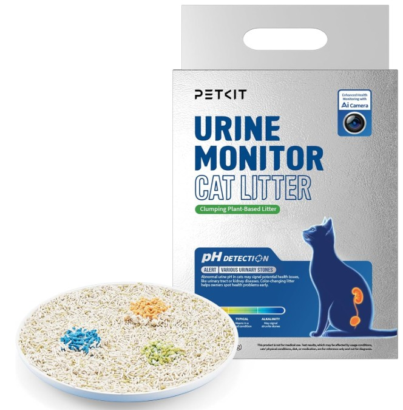
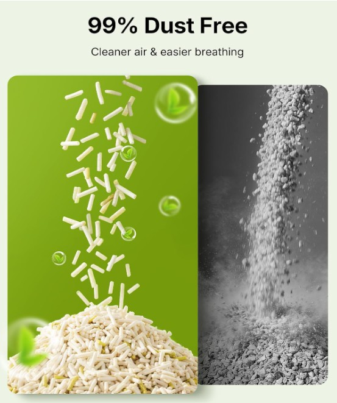
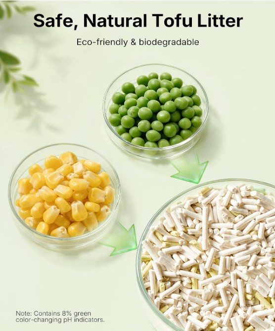
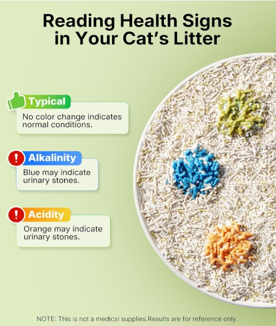
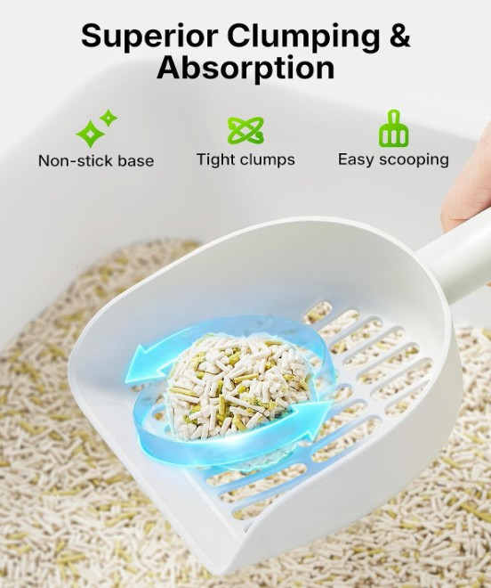
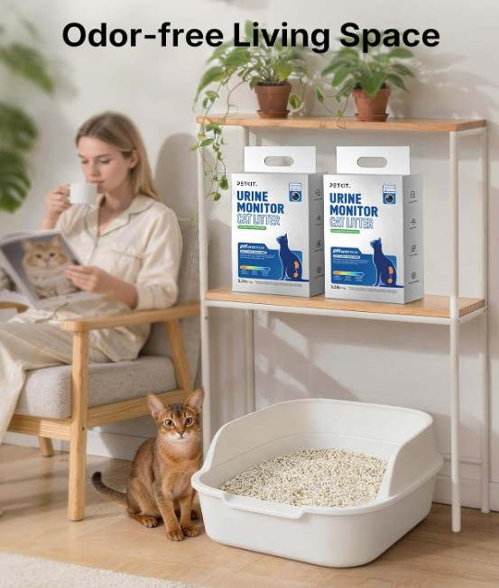
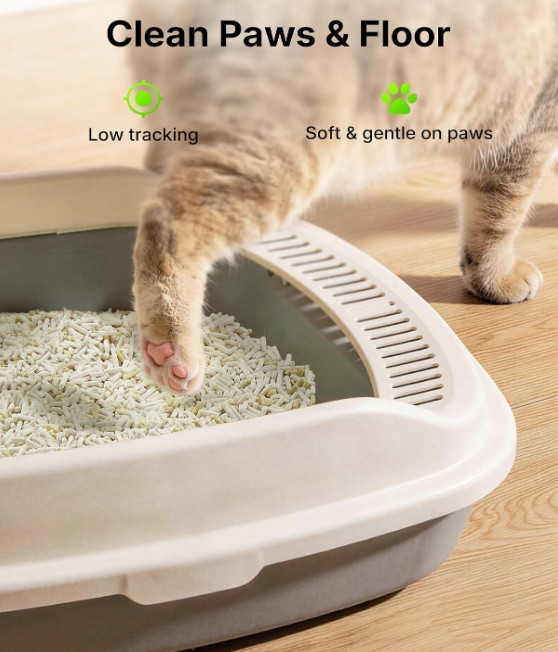

A PETKIT Urine Monitor Cat Litter transforma a utilização diária da caixa de areia numa forma prática de acompanhar possíveis alterações no pH da urina do seu gato. Uma forma simples e não invasiva de acompanhar a saúde urinária.
🩺 Monitorização urinária integrada na rotina diária
Em vez de recorrer a tiras de teste ou de tentar recolher manualmente a urina do gato, a PETKIT Urine Monitor permite que a monitorização aconteça enquanto o gato utiliza normalmente a sua caixa de areia. As partículas cromogénicas reagem ao pH da urina e podem apresentar alterações de cor perante valores anormais.
📱 Mais inteligente com caixas PETKIT compatíveis
Quando utilizada com uma caixa de areia PETKIT equipada com câmara e funções de monitorização (como a série Purobot compatível), a alteração de cor das partículas pode ser captada pela câmara e integrada na aplicação PETKIT, enviando alertas e registos visuais.
🌿 Ingredientes e Cuidados
Produzida com fibra de ervilha, amido de milho, goma de guar comestível e substância cromogénica. Importante: Não misture com outras areias nem utilize sprays desodorizantes de terceiros para não alterar os valores de pH.